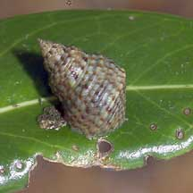
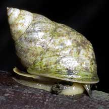
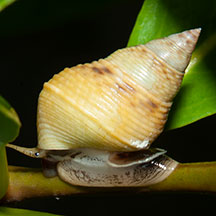
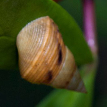
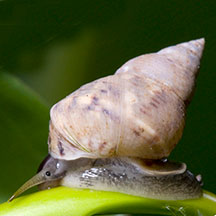
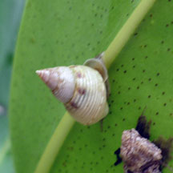
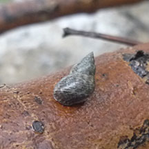

|
|
| shelled snails text index | photo index |
| Phylum Mollusca > Class Gastropoda > Family Littorinidae |
| Mangrove
periwinkle snail Littoraria sp.* Family Littorinidae updated Aug 2020 Where seen? This periwinkle is commonly seen on the trunk, branches and leaves of mangroves and coastal plants. Usually seen alone. Features: 2-3cm. Grouped here are all periwinkle shaped snails found on mangroves. Shell thin, various shapes from conical with a sharp spire to squat with flatter spire. Operculum thin, circular, made of a horn-like material. Species are difficult to positively identify without close examination. On this website, the various kinds of periwinkle snails found in mangroves and coastal plants are grouped here for convenience of display. |
|
 Pulau Semakau, May 07 |
 Kranji, Jun 06 |
 Pulau Semakau, Aug 11 |
*Species are difficult to positively identify without close examination.
On this website, they are grouped by external features for convenience of display.
| Unidentified Mangrove periwinkle snails on Singapore shores |
On wildsingapore
flickr
|
| Other sightings on Singapore shores |
 Pulau Sekudu, Jun 15 Photo shared by Heng Pei Yan on facebook. |
 Pulau Semakau, Apr 09 Photo shared by Marcus Ng on flickr. |
 Pulau Sudong, Dec 09 Photo shared by Ivan Kwan on flickr. |
 Pulau Sudong, Dec 09 Photo shared by Ivan Kwan on flickr. |
Links
References
|